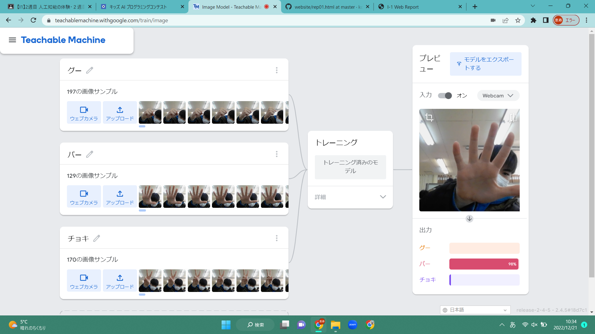

第2週目
2-1 １週目のレポートをHTMLで作る
１週目のレポート
1.内容
GitHubを使用して1週目のレーポートを作成した。
2.感想
1週目にGitHubの使い方を学んでいたので、難なくレポートを作成することが出来た。写真に関しては、少し難しいと感じたが、何とか出来た。
2-2 機械学習体験

1.内容
webカメラを使用してグー・チョキ・パーを機械に学習させて、判別を行った。
2.感想
このような機械学習は少しだけテレビで見たことがあったが、もっと高性能なカメラやコンピュータが必要だと思っていたのでPCのカメラで出来ると聞いたときはとても驚いた。
2-3 VR（バーチャルリアリティー：Virtual Reality）の体験
1.内容
vrゴーグルを装着して、vr会議を体験した。
2.感想
自分でvrゴーグルを買うことが無いので、貴重な経験になったと思う。vrゴーグルを装着してでの会議はzoomでの会議よりも参加している気分になれて、会議に集中できると思った。
しかし、長時間装着するとなると、重くて疲れると思った。